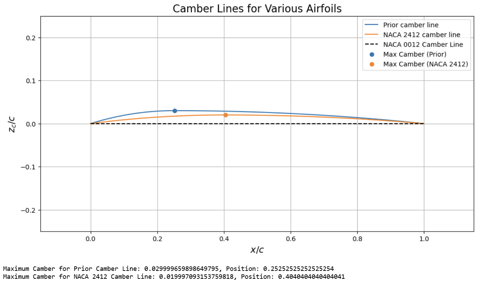
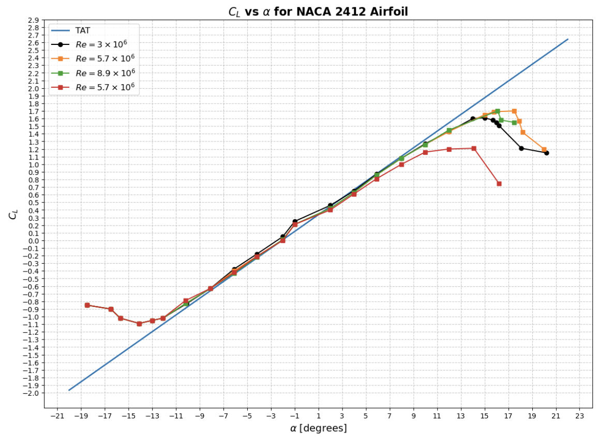
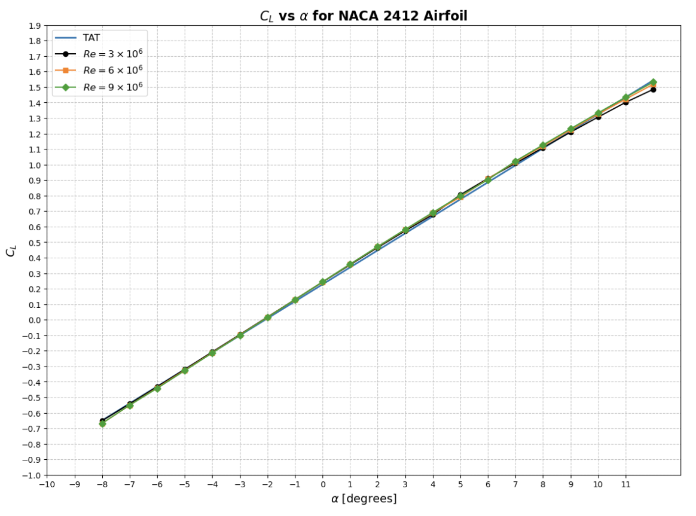
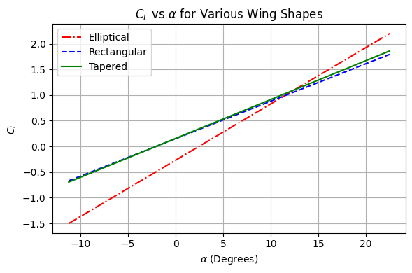
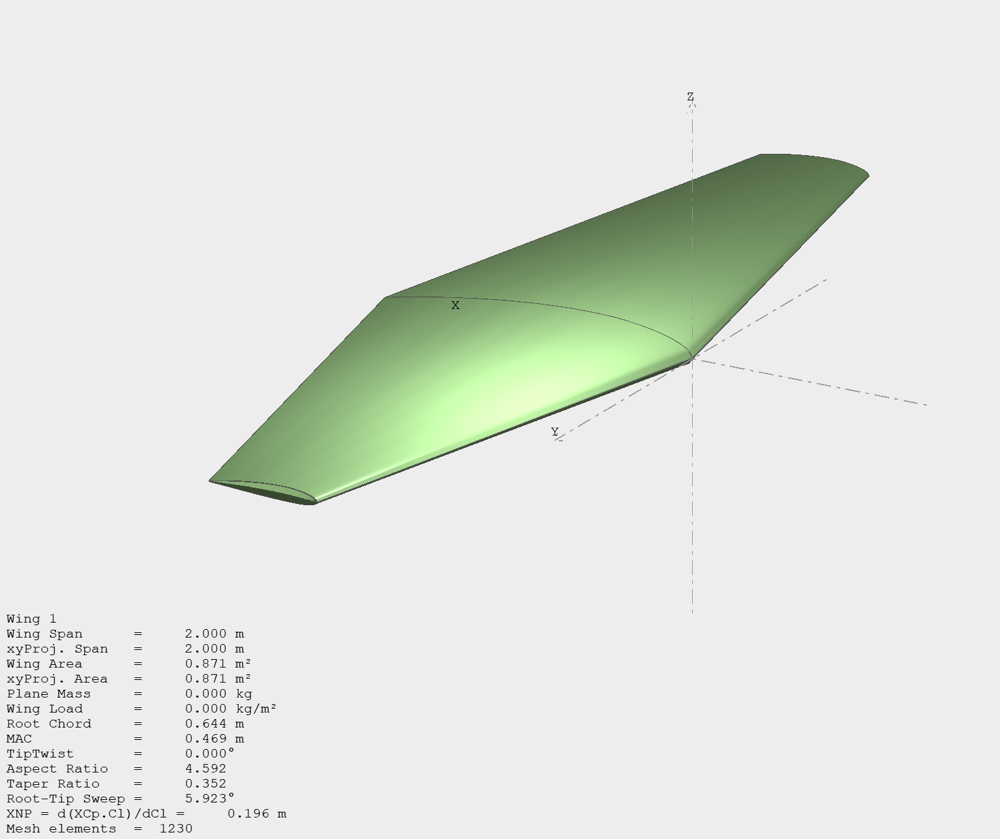
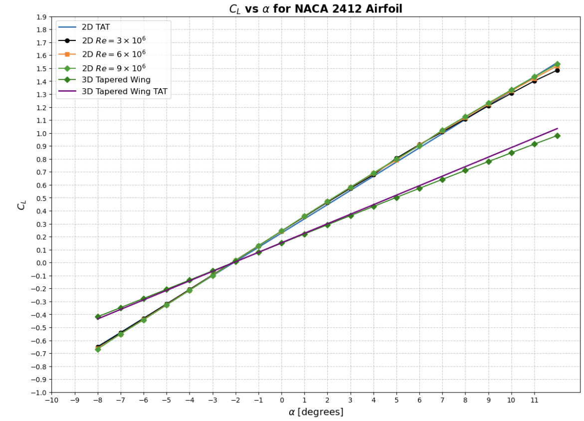

Overview
This project takes a single design question — what wing should a small 6.2 kg, 2 m span aircraft flying at 10 m/s actually use — and works it from first principles through to a validated three-dimensional model. It runs in three stages: an analytical Thin Airfoil Theory comparison of three candidate airfoils, a validation pass that pins down exactly where that theory holds by checking it against published NACA wind tunnel data and XFLR5’s vortex panel method, and a finite-wing design study that sizes elliptical, tapered, and rectangular configurations before verifying the chosen one in XFLR5’s 3D panel solver. The goal wasn’t only to land on a wing at the end, but to know at every step how far the tool I was using could actually be trusted.
What I did
I started from three candidate airfoils: the symmetric NACA 0012, the cambered NACA 2412, and a parabolic camber profile with ε = 0.03. For each one I wrote out the mean camber line, differentiated it to get dz/dx, and evaluated the Fourier coefficients of the Thin Airfoil Theory solution, A0 = α − (1/π)∫(dz/dx) dθ and An = (2/π)∫(dz/dx) cos nθ dθ, after the coordinate substitution x = (c/2)(1 − cos θ). The parabolic profile is piecewise, so its integrals split at θ = π/3; carrying them through symbolically gave A0 = α − 0.66313ε and A1 = 4.558248ε, which at ε = 0.03 works out to A0 = α − 0.0198939 and A1 = 0.13672. NACA 2412 came out at A0 = α − 0.0044929, A1 = 0.081495, and A2 = 0.013861.

Plotting the camber lines and the resulting CL = 2π(A0 + A1/2) curves put concrete numbers on the comparison. The parabolic profile carried the most camber, 0.03 at x/c = 0.25, with a zero-lift angle of −2.78°. NACA 2412 came second at 0.02 camber, located further aft at x/c = 0.40, with αL=0 = −2.08°. The symmetric NACA 0012 generated the least lift, with αL=0 = 0°. All three share the same 2π lift slope, since under Thin Airfoil Theory camber shifts the curve without ever tilting it. Where the camber sits turned out to matter as much as how much of it there is: 2412’s aft-loaded camber generally means lower drag, a more gradual approach to stall, and less sensitivity to surface irregularities, while the parabolic profile’s forward camber buys more lift at low angles of attack.
What the plots make obvious, though, is what the theory leaves out. Every CL versus α curve is a perfectly straight line, because Thin Airfoil Theory neglects viscosity and flow separation entirely — there is no stall anywhere in it. So before trusting any of these numbers I wanted to know where that linearity stops being true.

I overlaid the TAT prediction for NACA 2412 on published wind tunnel data at Re = 3.1×106, 5.7×106, and 8.9×106, plus a standard-roughness case at 5.7×106. The linear region runs from roughly −10° to 12°, and it holds its extent as Reynolds number climbs — stall onset barely moves across the three smooth cases. Surface roughness is what actually shrinks it, visibly cutting the usable range. The TAT slope also runs slightly steeper than the tunnel data, which is what you’d expect from wall interference, measurement error, and non-uniform freestream flow off the tunnel’s fan blades. For the design condition itself I computed the operating Reynolds number directly, Re = ρuL/μ = (1.225)(10)(0.436)/(1.81×10−5) ≈ 2.95×105.

The second validation used XFLR5’s 2D vortex panel method over α = −8° to 12° at Re = 3, 6, and 9 × 106. The agreement here was much tighter: the panel-method slope matches TAT almost exactly through the linear region, closer than the wind tunnel data managed. Within the unstalled range the two methods are effectively interchangeable, and the difference only surfaces at stall, which a panel method can represent and TAT structurally cannot.
With NACA 2412 settled on as the section, the next question was planform. I set a two-dimensional baseline first, treating the wing as an infinite-span airfoil at the design condition — m = 6.2 kg, V∞ = 10 m/s, b = 2 m, c = 0.438 m, ρ = 1.225 kg/m³ — and solving L = W for the required angle of attack, which gave α ≈ 0.144 rad (8.25°) with zero induced drag by construction. Then I sized three finite-span configurations at fixed planform area and span: elliptical, tapered, and rectangular.
The elliptical wing, at AR = 4.566 and CL = 1.13, needed 12.74° of geometric angle of attack and produced the lowest induced drag coefficient of the three, CDi = 0.089, for a lift-to-drag ratio of 12.7. For the tapered wing I used a taper ratio of λ = 0.35, inside the 0.3–0.4 band that minimizes induced drag, which set the root chord at 0.644 m and the tip at 0.227 m; with the non-elliptical drag parameter δ = 2(A2/A1)² = 0.058 and slope parameter τ = 0.025, the lift slope dropped to a = 4.336 rad−1 and the wing needed 13.37° with CDi = 0.101. The rectangular wing came out worst on trim angle at 13.95°, with the same CDi = 0.101, because its higher τ = 0.15 gives it the shallowest lift slope of the three at a = 4.18 rad−1.

The elliptical wing wins on every aerodynamic metric — highest lift coefficient at any angle above the required one, lowest induced drag, best lift-to-drag ratio — which is the textbook result, since an elliptical lift distribution is the theoretical optimum. But its continuously varying curvature makes it genuinely difficult and expensive to manufacture. The tapered wing gives up roughly 9% of the lift-to-drag ratio and about half a degree of trim angle in exchange for a planform built from straight edges. For an aircraft at this scale that trade is clearly worth taking, so the tapered wing is what I carried forward into the 3D analysis.

To check the tapered design in three dimensions I built it in XFLR5 in inviscid mode with 3D panels: 1,230 mesh elements over a 2 m span, a 0.644 m root chord, a 0.669 m mean aerodynamic chord, and AR = 4.592, offsetting the tip section by (Croot − Ctip)/2 so the airfoil stays centered at the tip. The pressure distribution at 10 m/s reads the way a healthy wing should: high pressure concentrated at the leading edge and root, low pressure across the upper surface and out toward the tips where the lift is being generated, and a smooth spanwise transition between them with none of the abrupt gradients that would signal separation.

The most useful comparison was putting the 3D wing and the 2D airfoil on the same axes. The 3D lift curve is visibly shallower: at any given angle of attack the finite wing generates meaningfully less lift than the 2D section does. That is downwash — tip vortices roll flow from the lower surface around to the upper surface, tilting the local flow, reducing the effective angle of attack, and adding induced drag that simply doesn’t exist in two dimensions. It is the concrete reason a wing cannot be signed off on 2D results alone. XFLR5’s 3D lift curve tracked the three-dimensional theoretical prediction closely, and its drag polar followed the non-elliptical induced drag expression CDi = CL²(1 + δ)/(π·AR) across the whole range, running slightly below it at high CL.
The last piece was working through how a single fixed planform gets adapted across flight phases, since takeoff prioritizes lift while cruise prioritizes efficiency. Flaps, hinged surfaces on the trailing edge, extend to increase camber and therefore lift, at the cost of more drag — an acceptable trade at the low speeds of takeoff and landing but not in cruise. Slats on the leading edge extend forward and also add camber, but their real function is the gap they open: it energizes the boundary layer and delays separation, raising the critical angle of attack so the wing keeps flying at angles that would otherwise stall it. Ailerons work in opposing pairs, one up and one down, deliberately creating a lift differential between the two wings to roll the aircraft about its longitudinal axis. Together they are what lets one fixed wing work across the whole flight envelope.
Tools & methods
Derived the Thin Airfoil Theory coefficients analytically by hand, splitting the piecewise camber integrals and carrying them through symbolically, then implemented every camber line, lift curve, and comparison plot in Python with NumPy and Matplotlib. Used XFLR5 in two modes: its 2D vortex panel method to validate Thin Airfoil Theory against a higher-fidelity model, and its 3D inviscid panel solver to model the tapered wing, extract the pressure distribution, and generate the lift curve and drag polar. Used published NACA wind tunnel data across four Reynolds number cases as the experimental reference, and finite-wing theory — aspect ratio, induced angle of attack, the non-elliptical drag factor δ, and the slope parameter τ — for all three planform sizing calculations.
Outcome
Converged on a tapered NACA 2412 wing — 2 m span, 0.644 m root chord, 0.227 m tip chord, taper ratio 0.35, AR ≈ 4.57 — that trims the 6.2 kg aircraft at 13.37° geometric angle of attack with an induced drag coefficient of 0.101 and a lift-to-drag ratio of 11.57, within about 9% of the theoretically optimal elliptical wing while being far simpler to manufacture. Just as valuable was the validation trail behind that choice: Thin Airfoil Theory confirmed accurate against wind tunnel data between roughly −10° and 12°, XFLR5’s 2D panel results matching the theory almost exactly inside that range, and the 3D panel results agreeing with both the theoretical lift curve and the non-elliptical induced drag expression across the full design envelope.